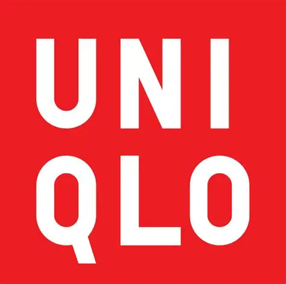

ここは、ユニクロについての紹介ページです。 このページを見ることにより、ユニクロの魅力が皆様に伝わると思います。

ユニクロの商品と他社の商品でどのような違いがあるのかポイントをまとめました。
| 他社との違い | |
|---|---|
| 値段 | 品質や機能性を考えると値段に対してコスパが良い |
| 品質 | 流行より日常で使えるベーシックで高機能な服を手頃な値段で売る |
| 店舗数 | 世界中で約2,500店舗以上ある。日本国内だけでも約790～800店舗ある |
| SDGs | リサイクルや長く使える服作り、労働環境の改善などSDGsへの取り組みを積極的に行っている |
| 客層 | 男女・年齢問わず幅広い人が着やすい |
| トレンド性 | トレンド性が低く、流行よりもベーシックで長く使える服を重視 |